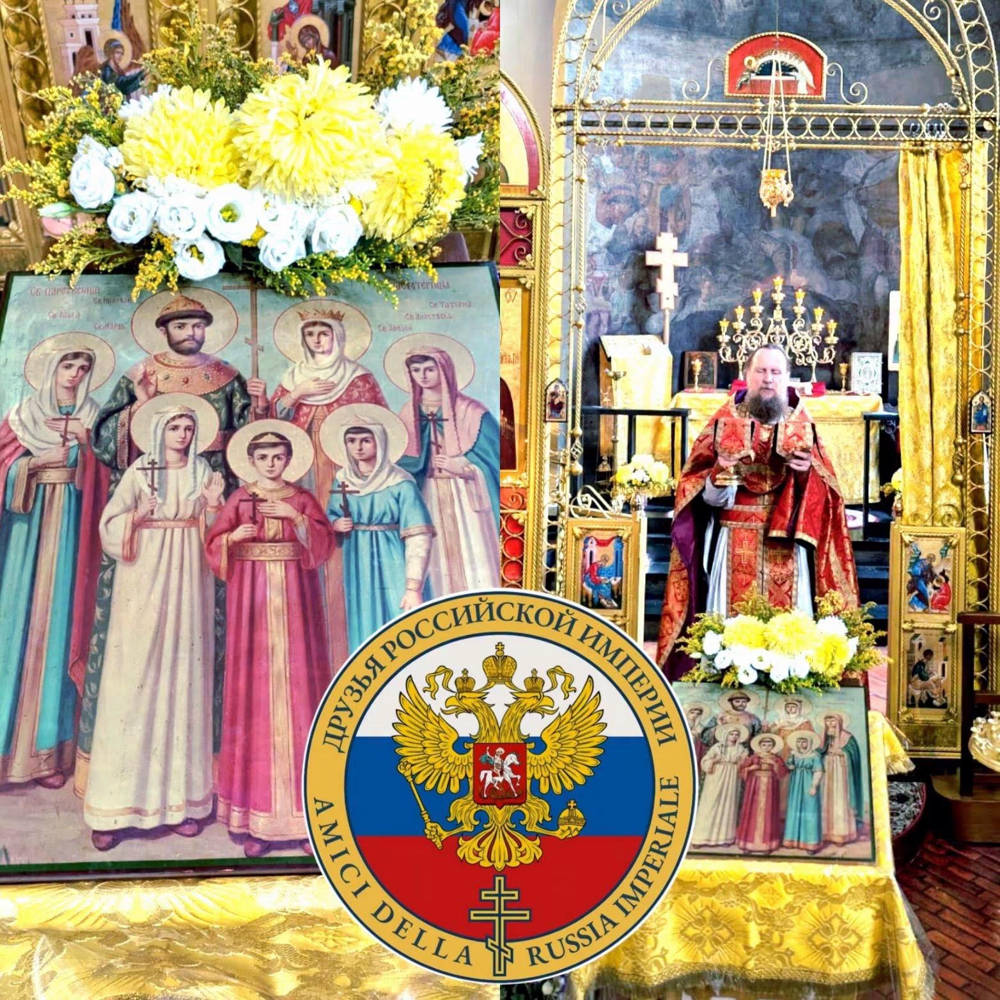

Chiesa Ortodossa dei Santi Sergio, Serafino e Vincenzo Martire - Patriarcato di Mosca
Via Giorgio Giulini 1, Milano (M1 Cairoli)
Il 17 luglio 2026, nella Chiesa Ortodossa dei Santi Sergio, Serafino e Vincenzo Martire a Milano, e stata celebrata la Divina Liturgia in memoria del Martirio della Famiglia Imperiale: l'Imperatore Nicola II, l'Imperatrice Aleksandra, il Granduca Aleksej e le Granduchesse Olga, Tatiana, Maria e Anastasia, uccisi durante la rivoluzione bolscevica.
Durante la predica, il rettore della Chiesa, padre Siluan, ha sottolineato la profonda fede cristiana dell'Imperatore Nicola, che lo condusse alla morte martiriale.
Tra i partecipanti erano presenti il barone Antonio Imperatore, presidente onorario e rappresentante in Italia dell'associazione, Giovanni Trombetta e il comandante Rudolf Kniesel, artista restauratore e rilegatore di libri antichi.